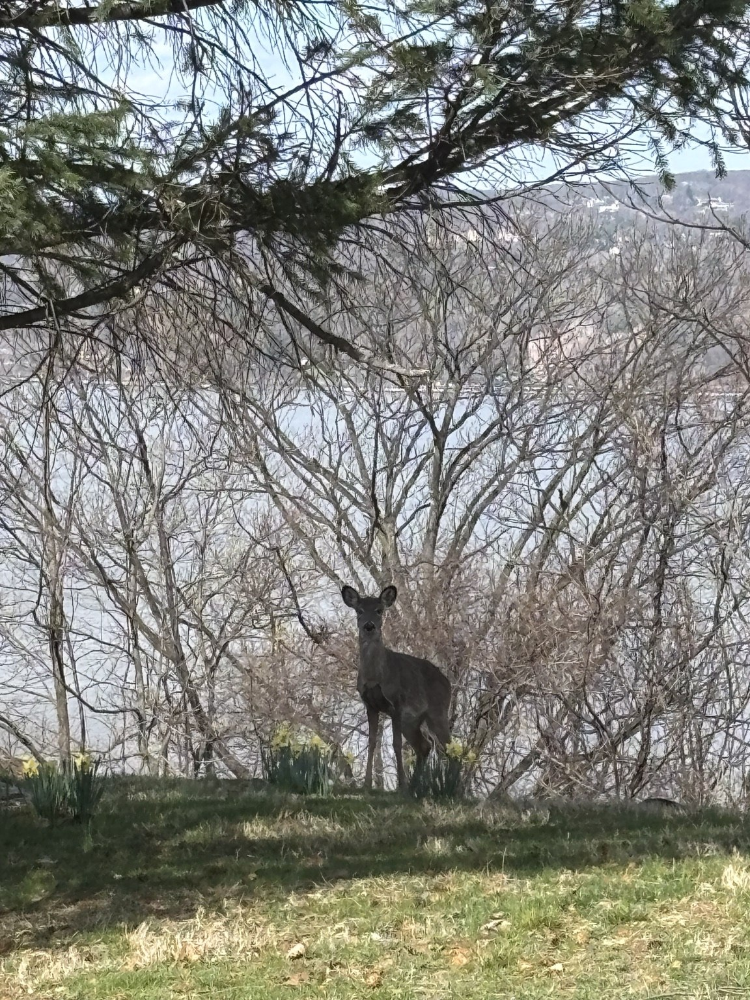
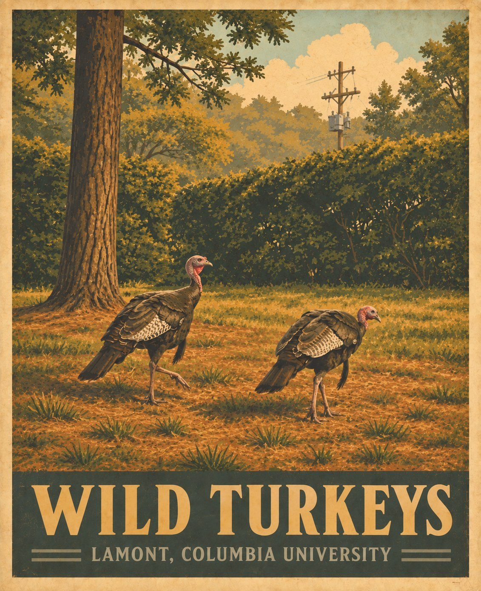
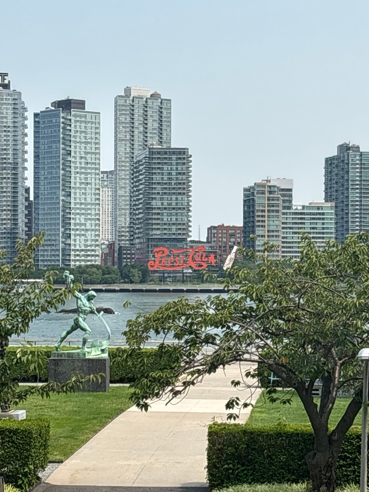
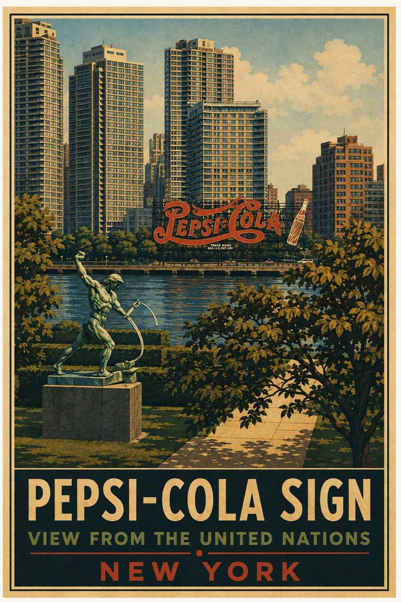

An exploration of human–AI creative collaboration, combining original photography, historical visual styles, and iterative generative AI techniques to create artwork inspired by the American WPA poster tradition.
Why the WPA Poster Style?
I chose the visual language of American travel and public-information posters from the 1930s, particularly those associated with the Works Progress Administration (WPA) and its Federal Art Project. Their simplified forms, strong silhouettes, restrained color palettes, and bold lettering lend everyday scenes a distinctive sense of place.
Each artwork began with one of my original photographs. I worked iteratively with generative AI to refine the composition, flatten colors, simplify details, adjust contrast, and revise lettering and titles until the result more closely evoked posters from that period. The goal was not to copy a specific historical poster, but to reinterpret these places and moments through that design tradition.
Equestrian Lincoln
Young Abraham Lincoln on horseback
Original photograph being prepared
Original photograph
Finished artwork being prepared
AI-assisted artwork
About the scene. An equestrian depiction of Abraham Lincoln, interpreted through the monumental forms and limited palette of 1930s American heritage posters.
Spring Deer
Wildlife at Lamont

Original photograph being prepared
Original photograph
Finished artwork being prepared
AI-assisted artwork
About the scene. A deer photographed in daylight during spring at Columbia University’s Lamont-Doherty Earth Observatory, home to the Food for Humanity Initiative.
Wild Turkeys
Wild turkeys at Lamont
Original photograph being prepared
Original photograph

Finished artwork being prepared
AI-assisted artwork
About the scene. Wild turkeys at Columbia University’s Lamont-Doherty Earth Observatory. These birds have been part of the campus landscape for many years.
U.S. Coast Guard Eagle
Tall ship on the Hudson River
Original photograph being prepared
Original photograph
Finished artwork being prepared
AI-assisted artwork
About the scene. The U.S. Coast Guard tall ship Eagle, photographed around July 3–4, 2026, during the Sail4th 250 celebrations marking the 250th anniversary of American independence.
Oedo Island
Geoje, South Korea
Original photograph being prepared
Original photograph
Finished artwork being prepared
AI-assisted artwork
About the scene. Oedo Island, off Geoje, South Korea. Its coastal landscape is interpreted in the visual language of American WPA-era travel posters.
Pepsi-Cola Sign
East River, New York City

Original photograph being prepared
Original photograph

Finished artwork being prepared
AI-assisted artwork
About the scene. A New York waterfront view featuring the landmark Pepsi-Cola sign and the United Nations in the foreground. I took the photograph after a food-systems meeting, shortly before the launch of FAO’s State of Food Security and Nutrition in the World (SOFI) report. The juxtaposition connects a familiar city landmark with my work on global food security.